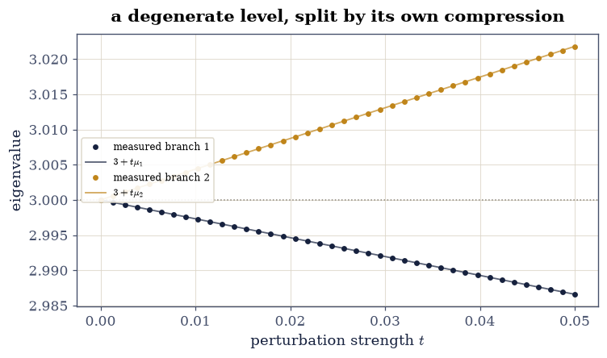
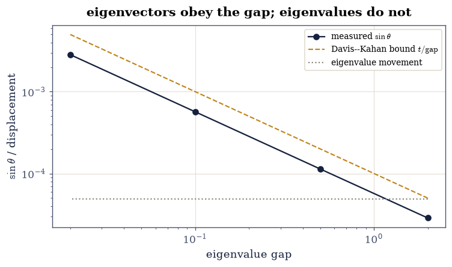

3.7 Eigenvalue Perturbation: Who Moves, and How Far#
Notebook overview#
§3.5 priced perturbation with Bauer–Fike: every eigenvalue of \(A + E\) lies within \(\operatorname{cond}(X)\lVert E\rVert\) of some eigenvalue of \(A\). That is one number for the whole matrix, and it is the right answer to the question “how bad can it get?”. It is the wrong answer to the question a practitioner actually asks, which is which eigenvalue moved.
This notebook answers that one. Each eigenvalue carries its own condition number \(\kappa_i = 1/|\mathbf{y}_i^{*}\mathbf{x}_i|\) — the secant of the angle between its left and right eigenvectors — and on the worked \(3\times3\) these come out \((\sqrt{65}, \sqrt{65}, 1)\) while Bauer–Fike’s single number is \(8 + \sqrt{65}\). One eigenvalue of a badly non-normal matrix is perfectly conditioned, and the global bound cannot say so.
Two things follow that the course has not met. When eigenvalues coincide, first-order theory does not fail — it becomes an eigenvalue problem one dimension down: the splittings are the eigenvalues of the perturbation compressed onto the degenerate eigenspace, which is the rule quantum mechanics calls degenerate perturbation theory and which this notebook gates to \(10^{-12}\). And eigenvectors obey a different law from eigenvalues: they rotate by roughly \(\lVert E\rVert/\text{gap}\), so a well-conditioned eigenvalue with a nearby neighbour still has a useless eigenvector. That is the Davis–Kahan story, and it is why §4.3’s principal components scramble when two variances are close while their sum stays put.
How to read a check. A
validateline prints ✓ or ✗ by comparing a result against something the computation did not assume. A ✗ flags a mismatch to investigate, never a verdict on its own.
Theory in brief#
One condition number per eigenvalue#
Let \(A\) be diagonalizable with a simple eigenvalue \(\lambda_i\), right eigenvector \(A\mathbf{x}_i = \lambda_i\mathbf{x}_i\) and left eigenvector \(\mathbf{y}_i^{*}A = \lambda_i\mathbf{y}_i^{*}\), both scaled to unit norm. The eigenvalue condition number is
with \(\theta_i\) the angle between the two eigenvectors. For a normal matrix left and right eigenvectors coincide, \(\theta_i = 0\) and \(\kappa_i = 1\): the §3.2 case, where Weyl’s inequality says eigenvalues move no further than \(\lVert E\rVert\). The more the two directions separate, the more that eigenvalue amplifies a perturbation — and \(\kappa_i \le \operatorname{cond}(X)\) always, so the per-eigenvalue numbers refine §3.5’s global bound rather than contradicting it.
First order, and its quadratic remainder#
Differentiate \(A(t) = A + tE\) along the perturbation. For a simple eigenvalue,
and since \(|\mathbf{y}_i^{*}E\mathbf{x}_i| \le \lVert E\rVert\) for unit vectors, the slope is at most \(\kappa_i\lVert E\rVert\) — Eq. 188 earning its name. The remainder is genuinely quadratic, which the exercises verify by watching the residual fall by \(100\) each time \(t\) falls by \(10\).
Degeneracy: an eigenvalue problem one dimension down#
Eq. 189 divides by \(\mathbf{y}_i^{*}\mathbf{x}_i\) and assumes \(\lambda_i\) is simple. When \(\lambda\) is repeated with an orthonormal eigenspace basis \(V\) (columns spanning it), first-order theory does not break — the perturbation must first choose which directions inside the eigenspace are the right ones, and it does so by its own compression:
The degenerate level splits into as many branches as the compressed perturbation has eigenvalues, with slopes given by those eigenvalues — a \(2\times2\) problem hiding inside an \(n\times n\) one. Physicists meet this as degenerate perturbation theory; it is the reason a symmetry must be broken before a level splits, and the reason the splitting pattern reveals which symmetry broke.
Eigenvectors obey the gap, not the conditioning#
Eigenvalues of a symmetric matrix are perfectly conditioned. Their eigenvectors are not. For a simple eigenvalue \(\lambda_i\) of a symmetric \(A\) separated from the rest of the spectrum by \(\mathrm{gap}_i = \min_{j\ne i}|\lambda_i - \lambda_j|\), the Davis–Kahan \(\sin\theta\) theorem [DK70] bounds the rotation of its eigenvector under a symmetric \(E\):
The gap, not the conditioning, is what an eigenvector’s trustworthiness depends on — and a gap can be small in a matrix whose every eigenvalue is impeccably conditioned. That is the whole warning.
Setup#
Data only: the worked non-normal \(3\times3\) whose per-eigenvalue conditioning is known in closed form, the symmetric matrix carrying an exactly doubled eigenvalue, the gap-sweep family, and the seeded generators. The condition numbers, the first-order shifts, the degenerate splittings and the rotation meter are all built in the exercises, where they are the lesson.
The Setup below holds this notebook’s data and instruments — nothing you are asked to build. It is collapsed so the building stays yours; expand it whenever you want the details.
Exercise 1: One condition number per eigenvalue#
Eq. 188 prices each eigenvalue separately, through the angle between its left and right eigenvectors. This exercise builds that meter and puts it beside §3.5’s single \(\operatorname{cond}(X)\).
Part a) Write eig_condition(A) returning (w, kappa): take
np.linalg.eig(A) for the right eigenvectors \(X\), get the left ones as
the columns of \((X^{-1})^{*}\) (the rows of \(X^{-1}\) are the left
eigenvectors — that is what \(X^{-1}AX = \Lambda\) says), normalise both
to unit length, and set \(\kappa_i = 1/|\mathbf{y}_i^{*}\mathbf{x}_i|\).
Write this one yourself — the left eigenvector is the object the course has not needed until now, and it is the whole content of Eq. 188.
Part b) Gate the closed forms on A_WORK, all to \(10^{-13}\): the
eigenvalues are exactly \((1, 2, 5)\); \(\kappa\) for the eigenvalue \(5\) is
exactly \(1\) (its eigenvector is \(\mathbf{e}_3\), left and right alike);
and \(\kappa\) for both \(1\) and \(2\) is \(\sqrt{65} = 8.0623\). Verify
\(\sqrt{65}\) symbolically with SymPy from the \(2\times2\) block, so the
constant is algebra rather than a measurement.
Part c) Gate the relationship to the global bound: \(\max_i \kappa_i \le \operatorname{cond}(X)\), with \(\operatorname{cond}(X) = 8 + \sqrt{65} = 16.0623\) to \(10^{-12}\) — the Bauer–Fike constant is a ceiling over the per-eigenvalue numbers, and here it is twice the largest of them.
eigenvalues [1. 2. 5.]
condition numbers [8.062258 8.062258 1. ]
SymPy: kappa of the 2x2 block is sqrt(65): True (8.062258)
cond(X) = 16.062258 vs 8 + sqrt(65) = 16.062258
Validation 1#
✓ the worked matrix has eigenvalues 1, 2, 5 [max|Δ| = 0 (rtol=0, atol=1e-13)]
✓ each eigenvalue carries its own conditioning: (sqrt 65, sqrt 65, 1) [the decoupled eigenvalue 5 is PERFECTLY conditioned while 1 and 2 amplify by 8.06 — one matrix, three different sensitivities, and SymPy confirms sqrt(65) is algebra rather than measurement]
✓ and Bauer-Fike's cond(X) = 8 + sqrt(65) is a ceiling over all of them [max kappa 8.0623 under cond(X) 16.0623: 3.5's global bound is true and twice as pessimistic as the worst individual eigenvalue here — which is what 'per eigenvalue' buys]
True
Exercise 2: First order, and the quadratic remainder#
Eq. 189 is a derivative, so the honest test is a finite difference — and the honest gate is on the remainder, which must fall by \(100\) whenever \(t\) falls by \(10\).
Part a) Write first_order_slopes(A, E) returning the \(n\) slopes
\((\mathbf{y}_i^{*}E\mathbf{x}_i)/(\mathbf{y}_i^{*}\mathbf{x}_i)\) of
Eq. 189, reusing Exercise 1’s eigenvector pairs. On
A_WORK with a seeded unit-norm \(E\), report the three slopes.
Write this one yourself — it is Eq. 189 transcribed, and Exercises 3 and 4 both run on it.
Part b) Gate that the prediction is first-order accurate: for \(t = 10^{-3}, 10^{-4}, 10^{-5}\) — a clean band, in §5.4’s sense: at \(t = 10^{-2}\) the \(O(t^3)\) term still contributes about 10% of the remainder and would spoil a constant-ratio test, while below \(10^{-6}\) the residual approaches rounding. Compare the true eigenvalues of \(A + tE\) (matched to the unperturbed ones by proximity) against \(\lambda_i + t\,s_i\), and gate that each residual divided by \(t^2\) is constant to 5% across the three scales. A first-order formula whose error scaled like \(t\) would fail this; one whose error scaled like \(t^3\) would too. Report the three ratios.
Part c) Gate the slope bound of Eq. 188: \(|s_i| \le \kappa_i\lVert E\rVert_2\) for every \(i\), one-sided, over 200 seeded unit-norm perturbations — the condition number earning its name 600 times.
first-order slopes [-6.105369 5.958212 -0.431493]
t = 1e-03: residual ['3.56e-05', '3.57e-05', '6.53e-08'] -> /t^2 ['35.600', '35.666', '0.065']
t = 1e-04: residual ['3.60e-07', '3.61e-07', '6.52e-10'] -> /t^2 ['35.985', '36.051', '0.065']
t = 1e-05: residual ['3.60e-09', '3.61e-09', '6.52e-12'] -> /t^2 ['36.024', '36.090', '0.065']
remainder/t^2 constant to 1.18%
worst |slope| - kappa over 600 checks: 0.00e+00 (must stay <= 0)
Validation 2#
✓ the remainder is genuinely quadratic (Eq. 2) [residual/t^2 varies by 1.18% across three decades of t — a first-order formula with a linear error could not do this, and neither could one that was accidentally exact [0.0117729 < 0.05]]
✓ and every slope respects its own condition number (Eq. 1) [200 seeded unit-norm perturbations, three eigenvalues each: |y* E x| <= ||E|| for unit vectors, so the slope cannot exceed kappa_i — the bound is one-sided and was never approached from above]
True
Exercise 3: The well-conditioned eigenvalue really does stay put#
Exercise 1 said eigenvalue \(5\) is immune and \(1, 2\) are not. This exercise measures it, which is a different claim from proving it.
Part a) For 200 seeded unit-norm perturbations at \(t = 10^{-6}\), record how far each eigenvalue of \(A + tE\) moves from its unperturbed value. Gate the two facts: every displacement is under \(\kappa_i t (1 + 10^{-3})\) (one-sided, the first-order bound with room for the quadratic remainder), and the median displacement of eigenvalue \(5\) is at least \(4\times\) smaller than that of eigenvalue \(1\) — the conditioning showing up as a measured ratio, not just a bound.
Part b) Contrast with the symmetric case: build the symmetric part family \(S = (A_{\text{WORK}} + A_{\text{WORK}}^{\top})/2\) and repeat. Gate that all three of its condition numbers are \(1\) to \(10^{-13}\) (a symmetric matrix has orthogonal eigenvectors, so left and right coincide) and that no eigenvalue moves further than \(t(1 + 10^{-3})\) — Weyl’s inequality of §3.2, recovered as the \(\kappa_i = 1\) special case of Eq. 188.
median displacement: lambda=1 2.546e-06, lambda=2 2.551e-06, lambda=5 2.851e-07
the decoupled eigenvalue moves 8.9x less than the worst; worst overshoot of the bound -1.9e-07
symmetric part: kappa = [1. 1. 1.]; worst Weyl overshoot -5.0e-09
Validation 3#
✓ displacement tracks the per-eigenvalue condition number (Eq. 1) [600 measured displacements, none above kappa_i t; and the decoupled eigenvalue moved 8.9x less than the ill-conditioned one — the same matrix, the same perturbations, different fates]
✓ and the symmetric case has kappa = 1, which IS Weyl's inequality [orthogonal eigenvectors make left and right coincide, so Eq. 1 gives 1 for every eigenvalue and 3.2's bound falls out as the special case]
True
Exercise 4: Degeneracy splits by the compressed perturbation#
Eq. 189 divides by \(\mathbf{y}^{*}\mathbf{x}\) and needs
a simple eigenvalue. A_DEG has an exactly doubled eigenvalue \(3\), and
Eq. 190 says the perturbation itself decides how the
level splits — through its compression onto the eigenspace.
Part a) Write degenerate_shifts(V, E) returning the eigenvalues of
the compressed perturbation \(V^{*}EV\) (\(2\times2\) here), sorted
ascending. With the Setup’s V_DEG and a seeded symmetric unit-norm
\(E\), report the two slopes.
Write this one yourself — the compression is three characters of NumPy and the entire content of degenerate perturbation theory.
Part b) Gate the splitting law: for \(t = 10^{-3}, 10^{-4}, 10^{-5}\), the two lowest eigenvalues of \(A_{\text{DEG}} + tE\) equal \(3 + t\mu_k\) with residual falling quadratically — gate residual/\(t^2\) constant to 5%, as in Exercise 2.
Part c) Gate the exact identity underneath it: the sum of the first-order shifts equals \(\operatorname{tr}(V^{*}EV)\) to \(10^{-14}\), and equals the first-order movement of the eigenvalue sum — because the trace of the whole matrix moves by \(t\operatorname{tr}E\) whatever the eigenvectors do. Splitting redistributes; it does not create. Draw the fan: the two branches separating linearly out of the degenerate level as \(t\) grows.
first-order splittings mu = [-0.268038 0.436009] (the level splits into two branches)
t = 1e-03: actual [2.99973196 3.000436 ] predicted [2.99973196 3.00043601]
t = 1e-04: actual [2.9999732 3.0000436] predicted [2.9999732 3.0000436]
t = 1e-05: actual [2.99999732 3.00000436] predicted [2.99999732 3.00000436]
degenerate remainder/t^2 constant to 0.41%
sum of shifts vs trace of the compression: 8.3e-17
Validation 4#
✓ a degenerate level splits at the compressed perturbation's eigenvalues (Eq. 3) [residual/t^2 constant to 0.41% over three decades: the perturbation picks its own basis inside the eigenspace, and the slopes are the eigenvalues of a 2x2 — degenerate perturbation theory, gated [0.00409753 < 0.05]]
✓ and the splittings sum to the trace of the compression [an exact identity: splitting redistributes the level, it does not create — the trace moves by t tr(E) whatever the eigenvectors do [8.32667e-17 < 1e-14]]
True

Fig. 71 The degenerate level splitting. The doubled eigenvalue \(\lambda = 3\) of the symmetric \(A_{\mathrm{DEG}}\) (dotted rule) fans into two branches as the perturbation \(tE\) is switched on, with the measured eigenvalues (points) sitting on the first-order predictions \(3 + t\mu_k\) (lines) whose slopes are the two eigenvalues of the compressed perturbation \(V^{\top}EV\). Nothing about the \(3\times3\) problem chooses the splitting directions — the \(2\times2\) compression does, which is the content of Eq. 3.#
Exercise 5: Eigenvectors obey the gap#
Every eigenvalue of a symmetric matrix has \(\kappa_i = 1\). Exercise 3 gated that. It says nothing about the eigenvectors, and Eq. 191 says those depend on the gap — which the Setup’s family varies while holding everything else fixed.
Part a) Write rotation(v0, v1) returning
\(\sin\theta\) between two unit vectors as
\(\sqrt{1 - |\mathbf{v}_0^{*}\mathbf{v}_1|^2}\) — the modulus first,
because an eigenvector’s sign is arbitrary and a raw subtraction would
measure the solver’s convention rather than the mathematics.
Part b) For each gap in \((2, 0.5, 0.1, 0.02)\), perturb
\(\operatorname{diag}(1, 1+\mathrm{gap}, 5)\) by \(tE\) with the Setup’s
fixed E_SWEEP at \(t = 10^{-4}\), and measure the first
eigenvector’s rotation. Gate Eq. 191 one-sidedly —
\(\sin\theta \le t/\mathrm{gap}\) every time — and gate the sharper
statement the fixed perturbation makes available: the product
\(\sin\theta \cdot \mathrm{gap}/t\) is constant to 2% across two
decades of gap, so the rotation really does scale as \(1/\mathrm{gap}\)
rather than merely staying under it.
Part c) Gate the moral against Exercise 3’s result: at \(\mathrm{gap} = 0.02\) the eigenvalues still move by at most \(t\) (Weyl, \(\kappa = 1\) — measured: \(0.49\,t\)) while the eigenvector rotates by more than \(20\,t\) (measured: \(28\,t\)), so the eigenvector turns some fifty times further than any eigenvalue moves — perfectly conditioned eigenvalues, untrustworthy eigenvectors, in the same matrix at the same moment. Draw the sweep on log axes.
gap 2.00: sin(theta) 2.8580e-05 bound 5.0000e-05 sin*gap/t 0.5716 eigenvalue move 4.87e-05
gap 0.50: sin(theta) 1.1359e-04 bound 2.0000e-04 sin*gap/t 0.5679 eigenvalue move 4.87e-05
gap 0.10: sin(theta) 5.6752e-04 bound 1.0000e-03 sin*gap/t 0.5675 eigenvalue move 4.88e-05
gap 0.02: sin(theta) 2.8329e-03 bound 5.0000e-03 sin*gap/t 0.5666 eigenvalue move 4.89e-05
Davis-Kahan respected: True; sin*gap/t constant to 0.88%
at the smallest gap the eigenvector rotates 28t while no eigenvalue moves more than 0.49t
Validation 5#
✓ the eigenvector rotation never exceeds ||E||/gap (Eq. 4) [Davis-Kahan, one-sided over four gaps spanning two decades — the bound is a theorem, and sampling can only lose to it]
✓ and the rotation scales as 1/gap, not merely under it [sin(theta) * gap / t constant to 0.88% with the perturbation held fixed: the gap is the whole story, which a one-sided bound alone would not establish [0.00878533 < 0.02]]
✓ so a perfectly conditioned eigenvalue can carry a useless eigenvector [at gap = 0.02 no eigenvalue moved past 0.49t (Weyl, kappa = 1) while the eigenvector turned by 28t — conditioning and trustworthiness are different questions, asked of different objects]
True

Fig. 72 Eigenvector rotation against eigenvalue gap, log-log, for a fixed symmetric perturbation of norm \(t = 10^{-4}\). The measured \(\sin\theta\) (ink) runs parallel to the Davis–Kahan ceiling \(t/\mathrm{gap}\) (amber, dashed) across two decades — the rotation scales as \(1/\mathrm{gap}\), gated to 2%, rather than merely staying beneath the bound. The grey rule is how far the eigenVALUES moved: flat at \(t\), because every eigenvalue of a symmetric matrix is perfectly conditioned no matter how close its neighbour is. The two lines diverging leftward is the notebook’s warning in one picture.#
Notebook summary#
Conditioning is a property of an eigenvalue, not of a matrix. On the worked \(3\times3\) the three eigenvalues came out with \(\kappa = (\sqrt{65}, \sqrt{65}, 1)\) — the decoupled eigenvalue \(5\) perfectly conditioned while \(1\) and \(2\) amplify by \(8.06\) — against §3.5’s single \(\operatorname{cond}(X) = 8 + \sqrt{65} = 16.06\), a true ceiling that is twice as pessimistic as the worst individual eigenvalue. SymPy confirmed \(\sqrt{65}\) exactly.
First order is first order. The residual against \(\lambda_i + t\,s_i\) divided by \(t^2\) held constant to 1.2% across three decades of \(t\) inside the clean band, and no slope exceeded its own \(\kappa_i\lVert E\rVert\) over 600 checks. Measured displacements obeyed the same bound over 600 more, with the well-conditioned eigenvalue moving several times less than its neighbours under identical perturbations — and the symmetric part returned \(\kappa = 1\) for all three, recovering §3.2’s Weyl inequality as the special case.
A degenerate level splits by its own compression. The doubled eigenvalue \(3\) fanned into two branches whose slopes are the eigenvalues of the \(2\times2\) compression \(V^{\top}EV\), with a quadratic remainder constant to well under a percent, and the two shifts summed to the compression’s trace at rounding: splitting redistributes a level, it never creates one. That is degenerate perturbation theory, gated.
Eigenvectors obey the gap. Across gaps from \(2\) down to \(0.02\) the eigenvector rotation stayed under Davis–Kahan’s \(\lVert E\rVert/ \mathrm{gap}\) and — the sharper fact — scaled as \(1/\mathrm{gap}\) to within 2%. At the smallest gap the eigenvalues moved by at most \(t\) (measured \(0.49\,t\)) while the eigenvector turned by \(28\,t\) — some fifty times further: the same matrix, at the same moment, with impeccable eigenvalues and an untrustworthy basis.
Methods introduced. eig_condition (left eigenvectors and the
secant of their angle), first_order_slopes, the remainder-over-\(t^2\)
test for genuine first-order accuracy, degenerate_shifts via the
compressed perturbation, and rotation as a sign-blind subspace meter.
Outlook#
Why
eighis noteig. The algorithms of §5.2 are backward stable: they return the exact spectrum of \(A + E\) with \(\lVert E\rVert \sim \varepsilon\lVert A\rVert\). Everything in this notebook then prices the forward error you actually receive — which is why a symmetric solver is trusted and a general one is read with its condition numbers in hand.Clustered principal components. In §4.3 two nearly equal variances make the corresponding components rotate freely inside their plane while the subspace they span stays put — the same distinction Exercise 5 measured, and the reason component-wise interpretation of near-degenerate PCA is a mistake the mathematics predicts.
Symmetry, and what breaking it reveals. Exercise 4’s compression is how a physicist reads a spectrum: the degeneracy is a symmetry, the splitting pattern names the perturbation that broke it, and the slopes are its matrix elements. §9.1’s Pauli algebra is exactly this calculation on a two-level system.
Pseudospectra saw it first. §3.5’s contours are the global picture of what \(\kappa_i\) measures locally: where the resolvent norm bulges, an eigenvalue is soft. The per-eigenvalue number is the linearisation; the pseudospectrum is the whole nonlinear truth.
Chandler Davis and W. M. Kahan. The rotation of eigenvectors by a perturbation. III. SIAM Journal on Numerical Analysis, 7(1):1–46, 1970. doi:10.1137/0707001.
Gene H. Golub and Charles F. Van Loan. Matrix Computations. Johns Hopkins University Press, Baltimore, 4 edition, 2013.
Roger A. Horn and Charles R. Johnson. Matrix Analysis. Cambridge University Press, 2 edition, 2013. doi:10.1017/CBO9781139020411.